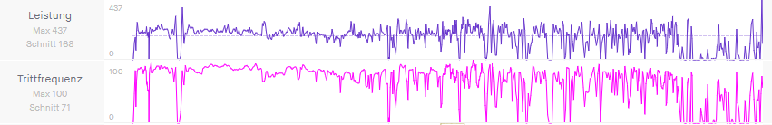

This Website
This website is also a current Project of mine. It is hosted on Github pages and is currently written
in plain HTML CSS and JS. If you have any suggestions or find any bugs please open
an issue on this pages Github repository.
Bike Powermeter
I am currently working on a diy bike powermeter.
It is based on strain gauges and a HX711 ADC.
The data is then processed by an microcontroller and the
sent to any standard bike computer via Bluetooth.
The powermeter is currently in the testing phase but the
first results are promising. You can find more information
about the project in the Github repository.
There is also some sample data collected from a ride down below.
Both the power and the cadence are collected from the powermeter.
Cadence is measured by a gyroscope.

My Printables account
In the future i will upload some of my designs to my Printables account.
3D printed watch
I am currently working on the second version of a diy 3D printed watch. It is based on a Miyota 8n24 Movement.The case back is screwed on and the
mineral watch glass is inserted while printing. I plan on making the back also transparent, but i want to get the first prototype done first
and then worry about some cosmetic changes. Down below you can see a render of the case.